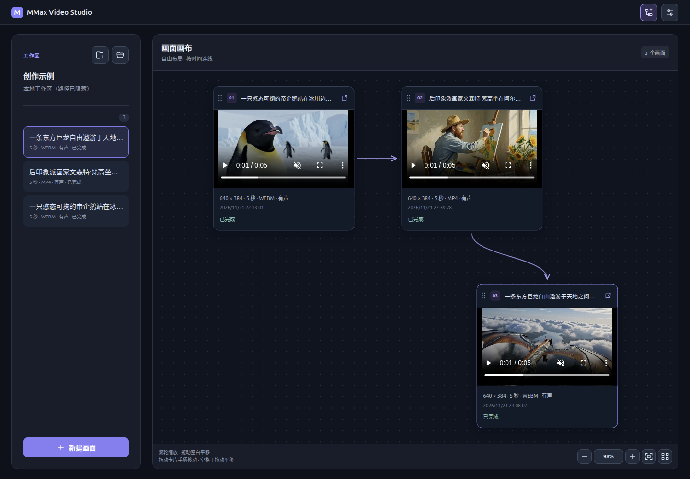
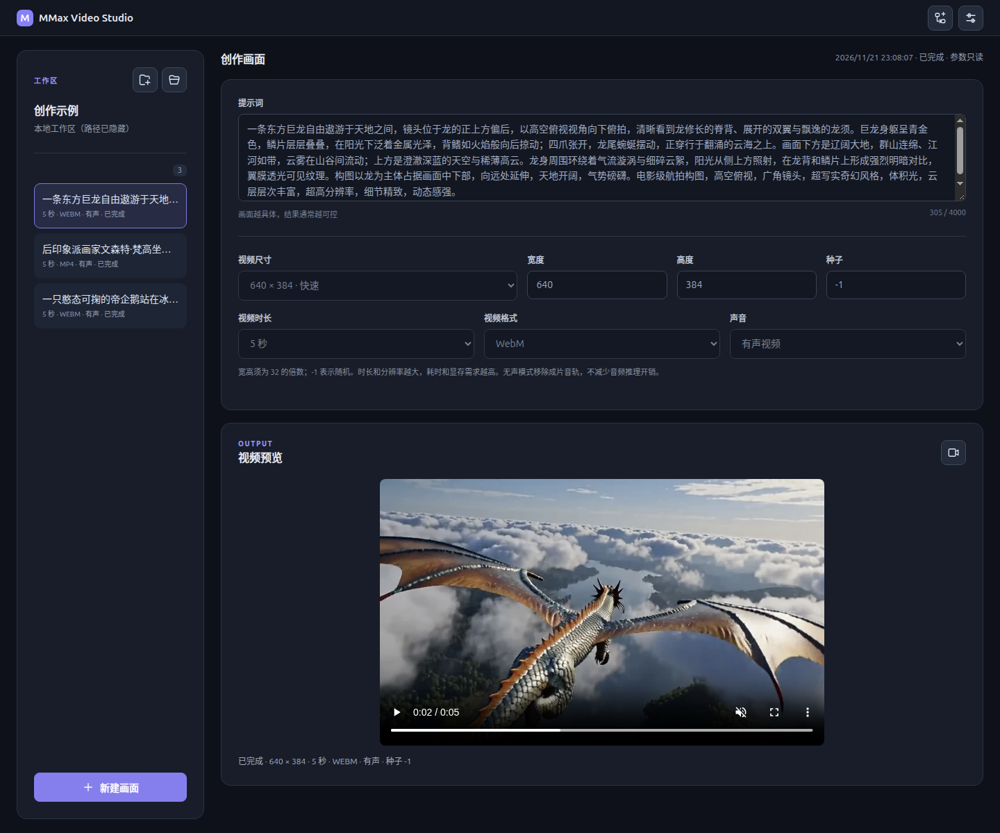
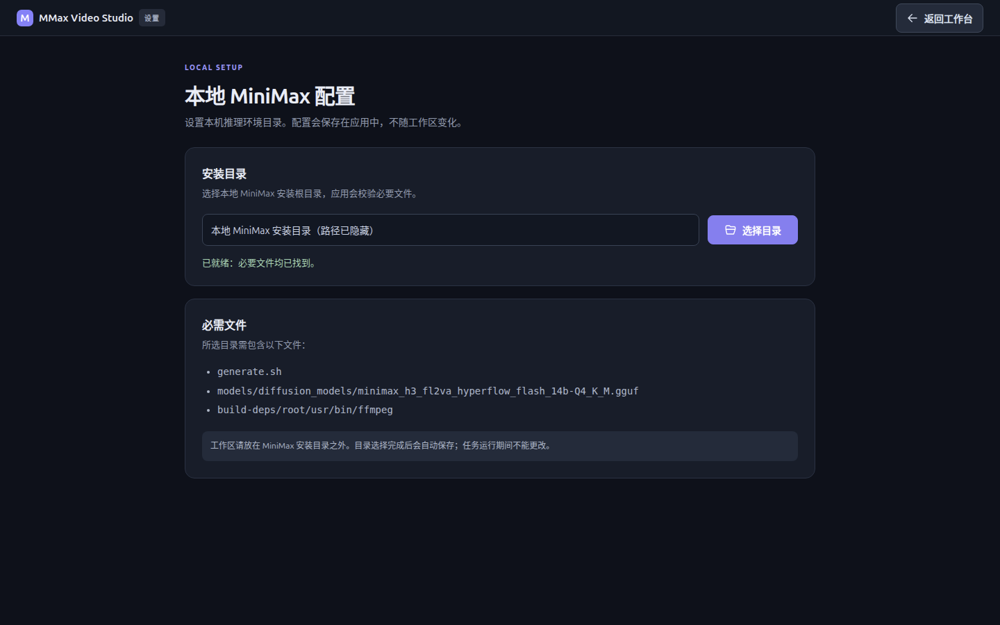

独立创作画面
提示词、尺寸、种子和成片各自保存。切换历史画面，不丢当前草稿。
LOCAL GENERATION · INFINITE CANVAS
从一段描述到一段视频，再到一整个创作工作区。
使用本地 MiniMax H3 生成，让每个画面都有自己的位置。
模型与推理环境需另行安装 · 本站为产品展示，生成在本机完成
ACTUAL WORKSPACE

提示词、尺寸、种子和成片各自保存。切换历史画面，不丢当前草稿。
光谱进度条随准备、采样、解码与导出单向推进，显示实际步骤和已用时间。
WebM 或 MP4，5 / 10 / 15 秒，有声或无声。文件保存在你选择的工作区。


GET STARTED
Linux x64 图形桌面，推荐 Ubuntu 22.04 或更新版本。
发布包包含 Electron，无需额外安装 Node.js。